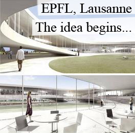
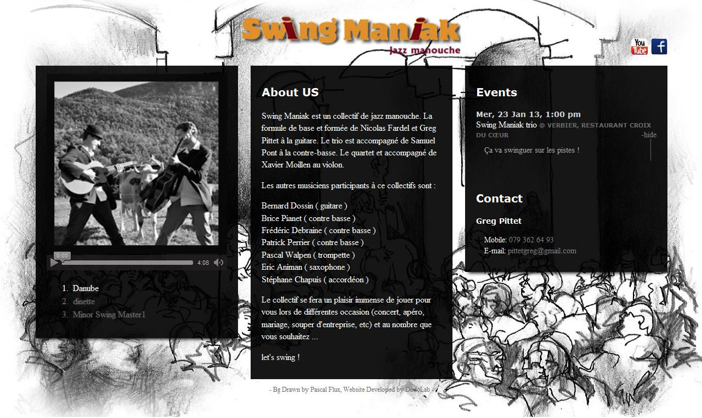

DodoLab

↑ NEC, 奈良 - where the team met
關於我們
DodoLab 團隊主要在研究和實作互動式網頁，比方說 canvas interaction,
location-based 等相關的 (mobile) web 應用程式。
我們除了喜愛嘗試新技術和 frameworks (ex. CSS3, HTML5, yui, node.js 等)，
我們也學習並應用新設計概念 (ex. responsive web design, dynamic layout 等)；
當然，在嘗試的同時，我們也非常注意到網站的穩定度和品質。
最重要的，我們非常在意您和使用者的感受!
團隊成員
詹佳蓉 (Apple)
學歷：娛樂科技研究所，美國卡內基美隆大學(CMU)
專長：研究使用者介面和互動設計
擅長工具：Photoshop；CSS3/HTML5、Javascript；C#、Java、Pyhon

CMU, 匹茲堡 →
- sky is the limit!

EPFL, 洛桑 ↑ - idea begins..
Demo
以下是我們個別或一起完成的作品：
A Quest Builder
Mobile Web Application
一個 location-based 的 quest builder，設計給住在紐約市郊青少年使用。
使用者登入後在不同地點上傳照片並寫下問題，讓其它來到這裡的人回答。每個問題背後都代表一種專業類別(設計、建築、科學等等)，完成答題後，系統會在其類別累計計分。希望藉此幫助這些青少年發現自己的興趣，也更認識他們所居住的城市。
Ruby on Rails (RoR)
此應用程式為學生專案，以 RoR 建置，是一個月內設計開發出的 Prototype。
mobilequest.heroku.com互動式謝卡
HTML5
這張婚禮電子謝卡以 HTML5 Canvas 實作。打開的第一個畫面是使用說明 (tutoial)，如果已經知道如何操作可以按跳過。進入後，參與婚禮的人可以選擇自己喜歡的相片列印。
YUI3
這個小 app 使用 YUI3 framework 做為架構來幫助程式維護和模組再利用。
lazybean.github.com/thxcardMisc::
假日除了遛狗和滑雪，我們也寫些測試小程式，玩玩一些功能與 frameworks。比方說：
Animation
寫一個簡單的相簿來試試 CSS3 Animation 的用法，也比較不同方試 (ex. 純 Javascript 或只用 CSS3..) 寫出的效果/能。
c9.io/pomme15/slideshowsLocal Storage

一個陽春版的 todo list 來測試 HTML5 的 localstorage 功能。
c9.io/pomme15/2dolistYUI APP Framework
這個 dive table 可以用來計算每次潛水時適合在水下待的時間長短。主要目的在測試 YUI3 的 APP Framework。
lazybean.github.com/scubadoo爵士樂團官網
CSS3/HTML5
音樂撥放器是利用 HTML5 的 Audio tag 來完成，相簿裡的照片則是隨著撥放歌曲變換。
使用 CSS3 的 Media Query 來實現 Responsive Web Design。同一個網頁會因應各 Device (PC, pad, mobile) 的視窗大小來產生不同 Layout 的設計，以方便閱讀。
Node.js 和 MongoDB
此網站以 MongoDB 資料庫和 Node.js 環境來建置，提供後台更新最新消息。註：第一版最新消息原本使用 Facebook API，與客戶溝通後，修改為客製化簡易後台頁面。
swingmaniak.ch Taiwan Rocks!
Taiwan Rocks!
這是我們最近開始的新專案，主要用在研究地圖與其資訊的互動。除了提共旅遊參考行程，也結合 Geolocation API 來定位與找尋附近的旅遊景點。
利用 YUI Gallery 裡的 widget 來實踐像 Pinterest 的 Dynamic Layout。
To Be Conti...